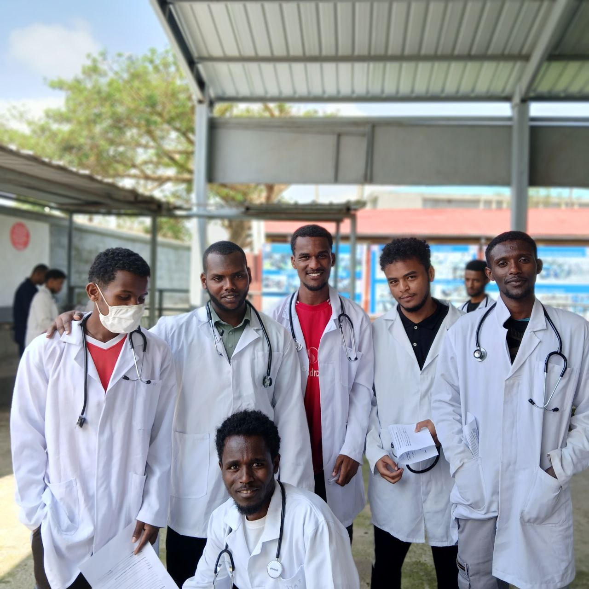
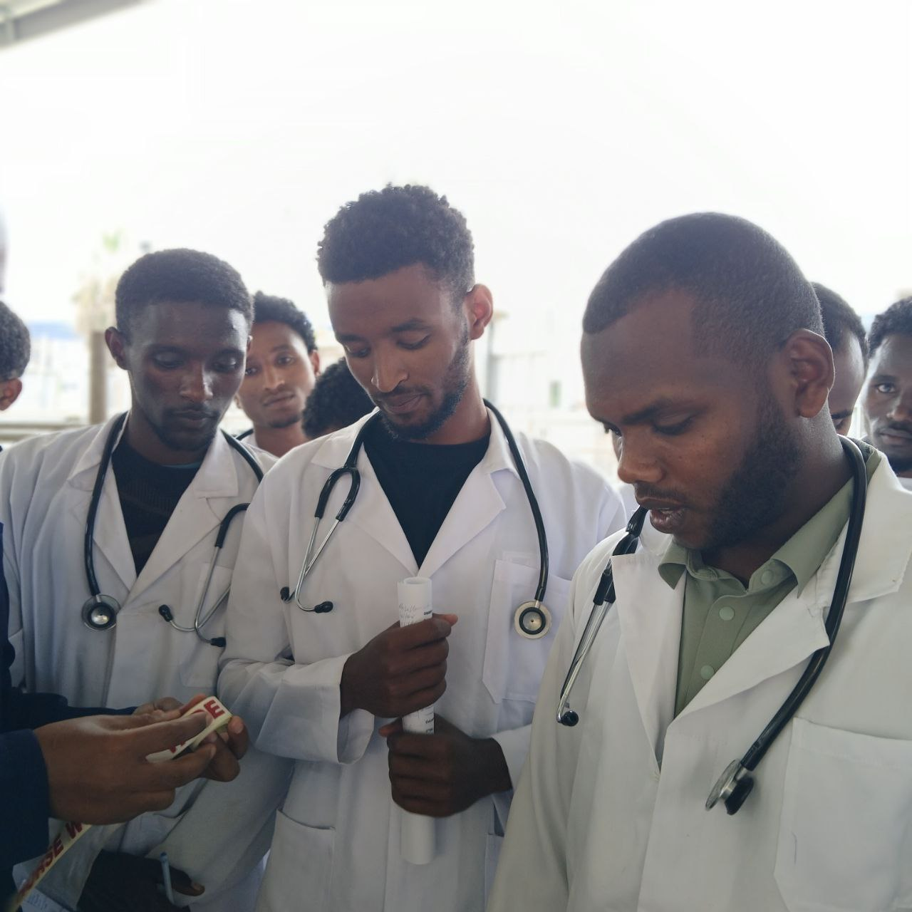

Professional Portfolios
Select a tab below to explore my practical experience across veterinary science, software engineering, and community leadership.
Doctor of Veterinary Medicine (DVM)
Addis Ababa University
My veterinary education goes beyond theory. I focus heavily on practical application, diagnostics, clinical diagnosis, and field interaction to support animal healthcare standards.
- Clinical Diagnostics & Surgery
- Microbiological Laboratory Analysis
- Preventive Medicine & Outbreak Management

Lab PracticeLaboratory Practice
Developing precision in microbiological staining, blood chemistry panels, parasite identification, and sample diagnostic analysis.

Hospital ClinicClinical Experience
Assisting in clinical diagnoses, administering treatments to companion and large animal patients, and gaining direct client-communication experience.
 Field Work
Field Work
Field Work & Extensions
Participating in mass vaccination programs, studying herd health on regional farms, and engaging with local pastoral communities.
Computer Science
Admas University
As a computer science student, I design solutions and study digital logic, system architecture, and modern programming languages. I aim to merge algorithmic design with real-world applications.
class Developer:
def __init__(self, name, passion):
self.name = name
self.passion = passion
def present_work(self):
print(f"Building software at Admas University.")
print(f"Applying logical models to complex problems.")
me = Developer("Menalkerim Abduljebar", "CS & Bio-Tech")
me.present_work()Architecture & Memory Representation
Designing software requires an understanding of hardware architecture, memory allocation, stack/heap structures, and algorithmic optimization.
Stack
Heap
Data
Text
Allcan Development Center
Founder & Director
As the founder of Allcan Development Center, I lead an initiative divided into three specialized sectors to provide educational, digital, and value-based development in our community.
Our Mission
To empower youth, provide digital services, build media outreach, and preserve religious and academic excellence through dedicated training and active project deployment.
Allcan Media
Driving our outreach through visual messaging, content production, social media management, and modern video/graphic production.
Allcan Tech
Providing local digital solutions, website development, technical support, and introductory tech-literacy workshops for students.
Ayaturrahman Islamic Institute
Directing religious education curriculums, mentoring youth, and fostering values of balance, ethical responsibility, and faith-based community action.